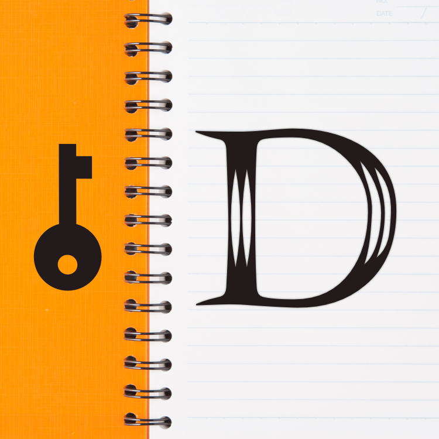

Welcome to JOURNAL DIARY With PASSWORD
Log life events & progress with our journal diary with password app.
A convenient, safe, reliable and simple to use mobile diary app to log your daily life activities, emotions and feelings.
You can keep it securely from others eyes, no one will see your diary book.


The mobile diary app is design for you to:
📝WRITE YOUR DAILY LIFE
Diary book is organized into segments similars to the calendar that you can select a day and write on it.
You will never miss any day in history, present and feature. Just select a time period in 1 second you can start writing after that by tap on a date you want, evaluate a feeling emotion and then begin.
To write note for today, just tap on Write button in the middle! And we are just simple: You can only write one entry a day, but your entry is kept with responsibility.
🔐 SECURE PASSWORD
We understand how precious your diary book is, so you can lock it by password to prevent it from curious eyes. No one except you, can open the diary book without the password.
⛑ SAFE BACKUP & SYNC
A diary book sometimes is more expensive than your phone, but device lost or accident uninstall may happen so you can backup your data to cloud storage drives like iCloud, Google Drive, One Drive, Dropbox or Box,…etc. [*]
The app supports restoration from cloud backups, even on a fresh install, or just for you when you want to move your diary book to a new device.
🗑 UNLIMITED BIN
Never miss anything important that accidently deleted, they’re all in a recycle bin that stores all of your drafts, duplicated. You can choose to put back to the diary, or decide to permently delete from the app.
You can delete on a day by swipe and delete, your item will turn from Diary Book into Bin.
You can put back an item from Bin to Diary Book, of course you can have your own action if newer version is existing in the Diary Book.
👀 SEARCH
Type a phrase you remember and the app can find all related notes in your Diary Book. You don’t need to dive in hundreds note in a long time to find the thing you want.
You can mark your diary item as Favorite
📔 ADJUST FONT & SIZE
Change the way your letters displayed to you by trying beautiful fonts, tune your font size until you feel comfortable.
🕵️ NO DATA COLLECTION
We design the app for users to keep their secrets, therefore None of your diary book data will be collected or analyzed.
No signing-in account needed to begin, no custom keyboard.
Notice:
[*] We are not affiliate with all apps mentioned above. All those apps must be bridged via Apple Files.
Please install Files at https://apps.apple.com/app/id1232058109
Read more privacy policy: https://ngvquangglobal.github.io/diary-app/privacy-policy.html
Read more terms of use : http://ngvquangglobal.github.io/diary-app/terms-of-use.html
Contact us: ngvquang.global@gmail.com